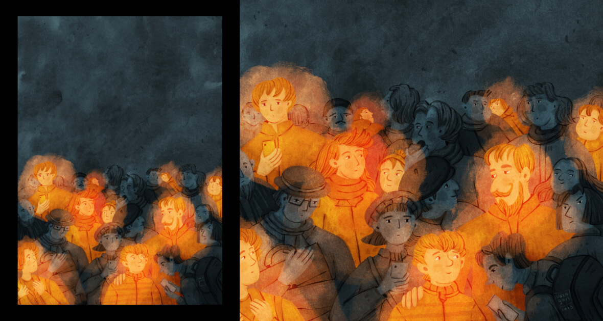
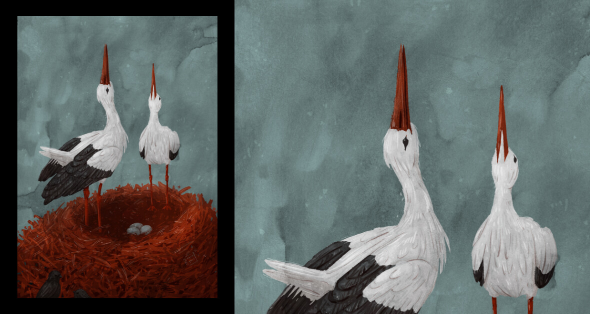
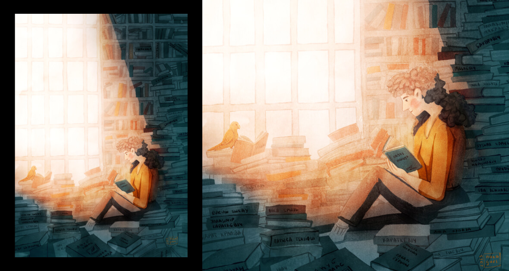
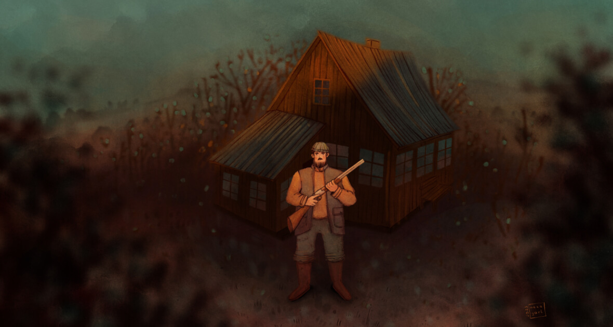
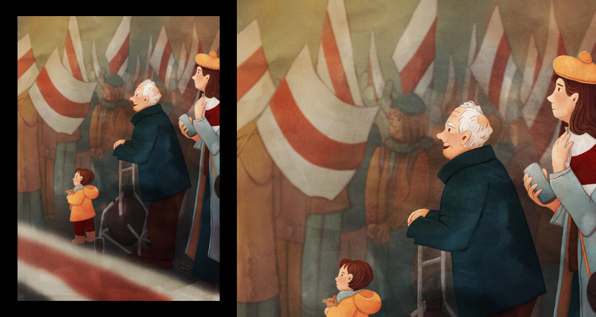
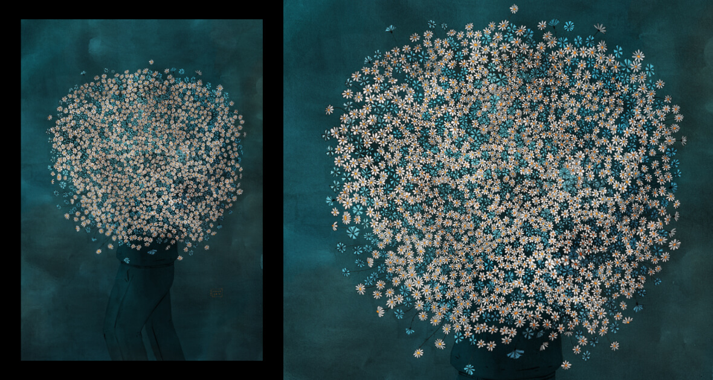

Маляўнічы сакавік
3 красавіка 2023
Гэты сакавік атрымаўся сапраўды маляўнічым. Тут з’явіліся ілюстрацыі і пра звычайныя жыццёвыя тэмы, і пра Беларусь, канешне.
Ліхтарыкі
Пра людзей, якія свецяць.
У бясконцым разважанні пра сэнс жыцця, напаткала на думку “быць святлом”. Ёсць жа людзі, што робяць дабро не спецыяльна, а як натуральны працяг таго, кім яны з’яўляюцца. І такіх людзей шмат. Хочаца таксама быць такой. Хочацца, каб агулам было больш людзей-ліхтарыкаў, і каб ісці па гэтым жыцці ўсім нам было і прыгажэй, і святлей, і радасней.
Буслы
Буслы - сімвал Беларусі, хоць жывуць далёка не толькі на яе тэрыторыі. Як і мы.
Шмат людзей выехала з краіны, дзе ўсё больш рэпрэсій і ўсё складаней жыць. Але і людзі, якія выехалі, працягваюць рабіць нешта на карысць Беларусі (не на карысць беларускаму рэжыму). І некаторыя беларусы сапраўды становяца сімваламі для цэлай краіны. Як і буслы.
Літаратура
Пра асабістую беларусізацыю.
Я - адна з тых, хто за апошні год пачаў размаўляць на сваёй мове. І чым далей, тым больш адчуваю патрэбу яе развіваць. Ёсць розныя ініцыятывы для гэтага, а яшчэ - ёсць літаратура. Пасля школы я асабліва не цікавілася ёй, а цяпер цікава ўсё, што створана па-беларуску. І з кожнай прачытанай кнігаю пашыраю не толькі мову, але і сваю беларускасць. Такая вось асабістая беларусізацыя.
Параўнанне
- Не параўноўвай сябе з іншымі!
- Ага…
Пра тое, што параўноўваць сябе трэба с сабою мінулым, а не з іншымі. Але, калі вакол адныя хмарачосы (альбо бясконцы інтэрнэт), то часамі гэта складана.
На гэтую ілюстрацыю мяне натхніў від з майго акна. Не толькі ён, канешне, а і разважанне пра творчасць і інтэрнэт. У інтэрнэце можна нагледзець мноства прыгажосці. І пастаянна ўзнікае пытанне, ці дакладна ёсць сэнс і мне гэтым займацца, бо шмат людзеё робіць па майму меркаванню лепш. Але, напэўна, я, як і ўсе мы, буду дзесьці пасярэдзіне: хтосьці толькі пачынае свой творчы шлях, а хтосьці ўжо далёка неперадзе. Так што гэта нармальна. Нават добра помніць, што я дзесьці пасярэдзіне. Гэта дае пакору, што, мне падаецца, добра ўздзейнічае на чалавека, на мяне. Галоўнае, каб гэтае параўнанне, не перашкаджала хоць нейкаму руху наперад. Бо каб прайсці, трэба ісці.

Хата з краю
“Мая хата з краю - першы ворага сустракаю”.
Гэта прымаўка ад украінцаў паходзіць. А ў Беларусі больш распаўсюджаны іншы варыянт. “Хата с краю” - гэта пра тое, што чалавека гэта не датычыцца, ён будзе працягваць жыць сваім жыццём і не залазіць у справу. Але гісторыя ўсё больш паказвае, што быць “не ў палітыцы” немагчыма, бо мы ўсе ў палітыцы. А калі прыходзіць вораг, трэба сустракаць яго, а то ён можа знішчыць нас, як шмат мірных украінцаў… Але смелыя людзі даюць натхняльны прыклад. Можа і мы, беларусы, станем больш смелымі, каб абараняць дом, дзе будзем гаспадарамі. Вось, збіраю мудрасць ад суседзяў на будучыню.
Пакаленні
Розныя пакаленні і адна надзея.
Гэтую ілюстрацыю я спецыяльна стварыла на Дзень Волі, які мы святкуем 25 сакавіка. Ужо 105 год святкуем, і ўжо 105 год як існуе беларуская дзяржава, хоць і звычайна пад нейкай акупацыяй. Пакаленні розныя прыходзяць, і ўсе яны мараць пра вольную і шчаслівую Беларусь. Але калі гэтая надзея пераходзіць з пакалення ў пакаленне, то мацнее спадзяванне, што аднойчы так і будзе.
Букет
Сколькі кветак, столькі палітвязняў.
На малюнку - 1467 кветак. Столькі людзей на дзень эскіза былі прызнаны палітвязнямі. Зразумела, што пакутуе ад несправядлівага пакарання шмат больш людзей. І час ідзе, а лічба палітвязняў павялічваецца. Нават з гэтага можна зрабіці выснову, што на Беларусі ўсё не толькі стабільна дрэнна, а становіцца ўсё горш.
Я ўжо малявала падобныя карцінкі з колькасцю палітвязняў у 2021 і 2022 годзе. Я малявала натоўп людзей, потым сілуэты ў вокнах. А цяпер колькасць палітвязняў настолькі вялікая, што ні твараў, ні сілуэтаў ужо бачна не будзе. Таму падумала пра букет. А калі разважала, якія кветкі маляваць, звярнула ўвагу на васількі і рамонкі, бо гэтыя кветкі растуць на Беларусі проста так. Гэта вольныя кветкі. І палітвязні - вольныя людзі. Але яны цяпер у руках сілавікоў.
─
Не хочацца заканчваць гэты запіс на такой балючай тэме апошняй ілюстрацыі. Але я малюю толькі тое, што з усіх маіх ідэй падаецца больш актуальным у моманце. І вось так атрымалася.
Спадзяюся, наперадзе чакае нешта добрае, а разам з ім і добрыя карцінкі.